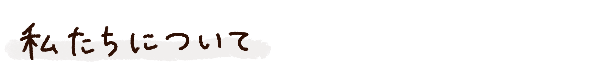

アントラクト（entracte）は演劇用語で、劇の1幕と2幕の間。
休憩時間や、その間に流れる間奏曲のことを指します。
「演劇を見る＝特別な時間」
そんな連想から、
お菓子を食べる時間が、その人にとって特別なものになってほしい—
という想いを込めて、この名前を付けました。
家事や仕事の“あいだ”
辛かった出来事から元気を取り戻す“あいだ”
ギフトを渡したい友人と自分の“あいだ”
大切にしたい出来事や節目の“あいだ”
日常のいろいろな場面で訪れる
「間―アントラクト―」に寄り添えるようなお菓子を作りたい。
そんな想いが込められています。
インスタグラム、店頭でもご確認いただけます。
定休日：不定休（赤丸が定休日）
営業時間：11:00〜17:00（売り切れ次第閉店）
ご来店に際して、注意していただきたいこと
足を運んでくださった全ての方に気持ちよくお買い物をしていただき、
その温かい気持ちも一緒にお持ち帰りいただけるように
丁寧な接客を心がけています。
しかしながら、アントラクトは店主ひとりで製造、販売を行っています。
きっと、商品お渡しまでお待たせしてしまうこともあるかもしれません。
どうか、お時間と心に余裕を持ちご来店いただけたらと思います。
また、まとまった数のお買い求めや、オリジナルギフトの制作については
ご予約をいただけますとスムーズにお渡しすることができます。
賞味期限について
一番おいしい状態で味わっていただきたい想いから、
賞味期限は短めに設定しています。
贈答用のお菓子をお求めの場合は、ご利用日をお確かめの上でご購入をお願いします。
ご予約について
出来立ての美味しさにこだわる当店では、
一度に大量に焼き上げたり、長くストックしたものを販売することはしません。
そのため、急なまとまった数でのご利用に対応できない場合があります。
事前にご予約をいただければ、心を込めてご用意させていただきますので、ご相談ください。
ご予約は店頭にて行っております。
坂戸駅から（徒歩20分）
北口を出て左へ。マルエツのある踏切を渡り、大通りへ。 左折後、Y字路を左へ進み、そのまま直進してください。
お車でお越しの方（鶴ヶ島インター）
インターから降りて坂戸方面に降ります。
407号線を進み、西入間警察署前の信号を左折します。
真っ直ぐ進み、突き当りの信号を左折します。
左折後すぐの十字路を右折します。（関越自動車道をくぐる手前にあります。）
真っ直ぐ進み、踏切も超えて、突き当りの信号を左折します。
そのまましばらく真っ直ぐ進むと左側にアントラクトがあります。
駐車場：店舗横2台／店舗裏5台